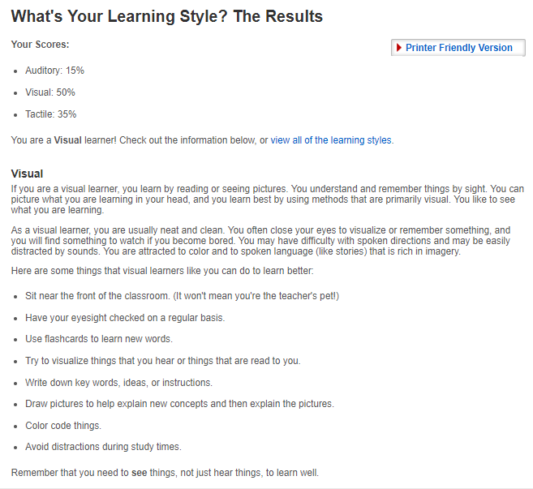
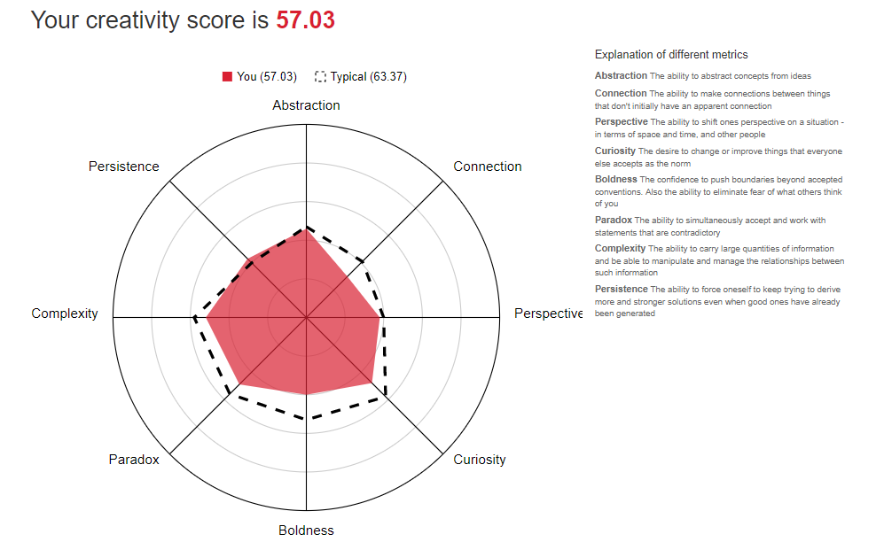

Myers-Briggs test psychcentral.com/quizzes/personality/start.php

the results in the test surprised me although some already know, "Extrovert" I am more a person who keeps his thoughts more when I am before the public, but in my previous work I had the opportunity to attend congresses and give small talks, about the work that was done in the government institution.
I am also the type of person who goes away more because of what feels than the instructions, sometimes family members tell me that I must be more daring, many of my actions I think before doing them, and I tend to judge the way of things.
Now with this test, I know that I have to improve key aspects, probably I must stand more often in front of the public and gain confidence.
Learning Style Test www.educationplanner.org/students/self-assessments/index.shtml

It was the first time I do this type of test learning style (I know that these are basic and non-professional results), but I found it very interesting that in my case, I always learn to see something before I can do it, I remember in my high school time, I always wrote down any keyword that would remind me of events that were of importance in the classroom. I tend to distract myself with ease, it is because of them that when I study I prefer to be locked in my room or somewhere where nobody bothers me.
Creative Test www.testmycreativity.com/
The results of the creativity test, they leave me below the average, that is interesting to my point of view because I know it is one of my weaknesses not to be a creative person, I have the idea but I don't know how to put it into practice. When I focus on some topic I try to do it in the best way, and I'm persistent to achieve the objectives, but I need to be a bit more daring and confident that I can do it.

With the bachelor I improve aspects, such as group participation, open my mind to creativity and be willing to take on new challenges.
Jaime Salgado - 2019
Personal Profile (Test's)